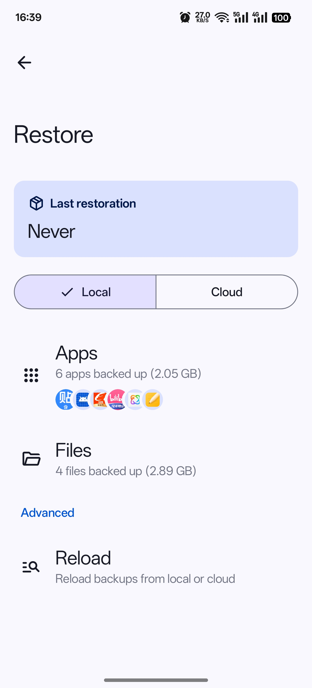
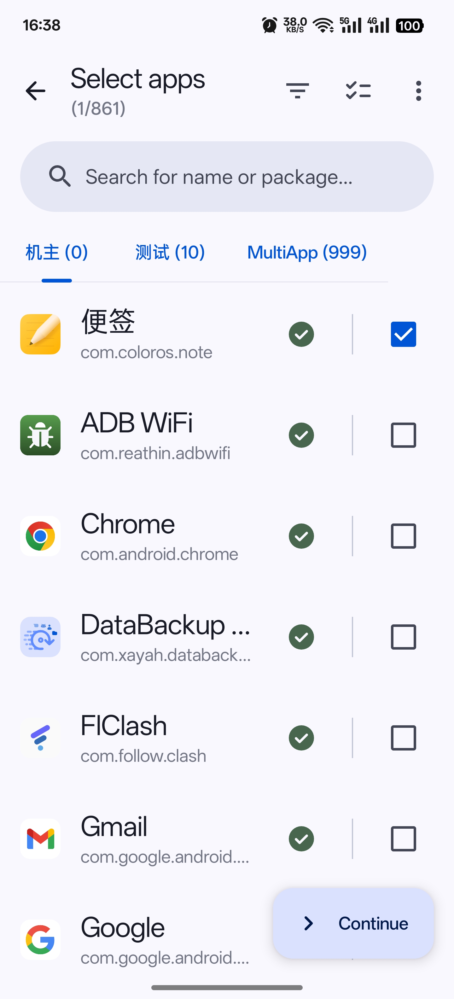

每周刷机不丢数据：我用 DataBackup 串起一套自动恢复链
刷机换 ROM 是折腾党常态，但每次手动装应用、导入数据要耗半小时。本文讲怎么把 DataBackup 嵌进一条备份-上云-恢复的完整工作流，让换机迁移从手工操作变成点两下就完。
以前每周刷一次 ROM，每次先删微信聊天记录
我是个喜欢折腾 Android 的人——每周刷一次 ROM，从 LineageOS 到 Pixel Experience 到各种国内定制版。一年下来至少换了二十套系统。
但有一件事让我头疼：每次刷完，DataBackup 之前要做这几步：
- 手动把微信、QQ、支付宝、游戏存档逐个导出到本地
- 用 U 盘或者数据线把这些文件从旧手机拷到电脑上
- 刷完新 ROM，先去应用商店把二十多个应用全部装一遍
- 再把备份文件一个个导回去，等每个应用都走完首次启动向导
- 检查聊天记录在不在、游戏进度对不对、设置有没有丢
整个流程下来，快的话二十分钟，慢的话四十多分钟。中间任何一步卡壳——比如某个应用的备份文件损坏了，或者新版应用的数据格式变了不兼容——就得手动重新登录、手动重新配置。
后来我发现 DataBackup 可以把这些步骤串成一条链。它是一个需要 Root 权限的 Android 备份工具，能把应用本体（APK）和数据一起打包，支持 WebDAV、FTP、SMB 三种协议把备份落到云端。最关键的是，恢复时可以对每个应用独立选择「完整恢复」还是「仅恢复数据」——这两个模式的配合，恰好对应刷机场景的两种不同需求。
它的官网上有一份能力列表，涵盖了从基础备份到云端同步到加密压缩的完整功能。想试试的话可以去下载拿个安装包，APK 文件体积不大，装起来很快。
新流程：一条链从备份到恢复
现在我每周刷机前的流程是这样的：
备份触发：刷 ROM 前一天晚上，打开 DataBackup，一键全选所有应用，点备份。备份文件默认存在内置存储的 DataBackup/ 目录下。
同时上云：DataBackup 的云端功能不是增量同步，它就是把备份产物写入你指定的路径。我家里有台群晖 NAS，开了 WebDAV，DataBackup 填个 URL 加账号密码就能把备份同时写到 NAS。这样手机内置存储一份、NAS 一份，双重保险——如果刷机过程中内置存储被 Wipe 清空了，NAS 那份还在。

刷 ROM：正常刷，刷完启动进入新系统。
恢复分两步：第一步，先从应用商店把二十多个核心应用装一遍——微信、QQ、支付宝、银行 App、游戏。第二步，打开 DataBackup，选择上一次的备份，对每个应用选「仅恢复数据」而不是「完整恢复」。DataBackup 会把数据解压到应用的数据目录里，不动 APK。这样做的好处是：应用商店装的版本和备份里的版本签名可能不一样（比如微信，应用商店版是官方签名，备份里的 APK 可能是之前从其他渠道装的），跳过 APK 就避开了签名冲突这个最常见的坑。
整个恢复过程自动跑完，中间不用盯。我通常是点完恢复就让它后台跑，自己去喝杯咖啡。回来的时候应用列表上的恢复状态卡片会一个个变成绿色的对勾。
流程里最容易断链的两个环节
这条链跑了十几次，我遇到过两个最容易卡壳的地方，现在都有了固定的处理方式。
环节一：KernelSU 和 APatch 的 Root 授权
DataBackup 需要 Root 权限才能访问 /data/data/ 下的应用数据目录。大部分人用 Magisk，Magisk 会在应用请求 Root 时自动弹窗让你选允许还是拒绝。但我用的是 KernelSU，它不会自动弹窗——所有超级用户授权都必须在 KernelSU Manager 里手动设置。
步骤是：打开 KernelSU Manager → 进入超级用户设置 → 点右上角加号 → 找 DataBackup（包名是 com.xayah.databackup.foss，别选错了）→ 权限设为允许 → 完全重启 DataBackup（从最近任务划掉再点开，不用重启手机）。APatch 的流程类似，也是在管理器里手动添加。如果重启后还是显示未授权，可以在终端模拟器里跑 su -c "id" 确认一下 Root 本身有没有问题。更详细的 Root 授权排查步骤可以去文档翻，里面按 KernelSU / APatch / Magisk 三种 Root 方案分别写了放行步骤。

环节二：从云端拉取备份时的网络抖动
DataBackup 不做断点续传，如果备份文件大（我的全应用备份通常在 8GB 左右），从 NAS 拉到手机中途断网了就得从头开始。我的应对方式是：备份落 NAS 之后，在电脑上开个 SMB 共享，把备份目录映射成一个网络盘，然后在 DataBackup 里用 SMB 协议连电脑。局域网的稳定性比 WebDAV 高得多，速度也快——局域网内拉 8GB 备份大概三分钟就完了。
如果局域网也不靠谱，还有个兜底：直接用 U 盘，手机插 OTG，备份文件先从 NAS 拷到 U 盘，再从 U 盘拷回手机内置存储。虽然多了一步，但至少不依赖网络。
效果：少了多少次手动复制
量化一下这条流程省了多少事：
- 以前每次要手动导出 20 多个应用的数据，每个应用至少点开 3 次设置菜单找导出入口——现在 DataBackup 一键全选，30 秒完成
- 以前备份文件要手动从手机拷到电脑，再从电脑拷回手机——现在 DataBackup 自动同时写云端，恢复时直接从云端拉
- 以前恢复完要逐个打开应用验证数据在不在——现在 DataBackup 跑完后会在通知栏给一个总览，我只需要抽查三五个核心应用
- 签名冲突的问题以前遇到过至少三次，每次都要重新安装重装应用——现在统一用「仅恢复数据」模式，签名冲突从流程里彻底消失
时间上，以前整个流程 30 到 40 分钟，现在 10 分钟以内——其中大部分时间是 DataBackup 自动跑的，我实际操作的时间不超过 5 分钟。
这套流程什么时候不划算
说了这么多好处，也有不适用的场景：
- 如果手机没 Root，DataBackup 基本废了——它的核心能力依赖 Root 访问
/data/data/，没 Root 的话只能备份应用本体，备份不了数据 - 如果只偶尔刷机（半年一次），可能不值得花时间配置 NAS 和 WebDAV，手动备份反而更省事
- 如果备份文件太大（超过 10GB），DataBackup 的云端写入会比较慢——它不做压缩也不做增量，全量复制到底
但对我这种每周折腾的人来说，DataBackup 已经成了刷机流程里的固定一环。它本身不做定时调度——要自动备份得用 Tasker 配合——但我觉得手动触发反而好：每次备份前我知道自己在干什么，不会出现备份了一半手机没电这种意外。
如果你也是个折腾 Android 的人，不妨试试 DataBackup 这套工作流。安装时如果系统拦住了，点一下允许未知来源就行。
这套资料在GitHub、Gitee、GitCode三个仓库都能拿到——GitHub 适合境外访问，Gitee 在国内速度更快，GitCode 作为双保险兜底，选哪个都行。